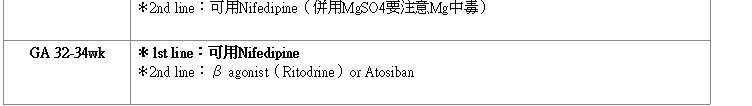

安胎
2025年2月11日
下午 03:02


- 重要fact
- Abx、黃體素、臥床休息，沒有辦法改善早產陣痛導致的早產
- 安胎藥不能直接改變NB預後
- 多種安胎藥不能增加安胎效力，可能會有藥物副作用，所以一種無效要換
- 不能使用prenisolone來安胎是因為無法穿過胎盤
- β agonist & steroid會使血糖升高
安胎藥AE
|
藥物 |
mech. |
AE |
注意 |
|
Ritodrine（Yutopar） |
β agonist（⭡cAMP） |
HR⭡、低血壓、低血鉀、高血糖、肺水腫 |
副作用太大停產 |
|
Indomethacin |
COX（⭣PGs, ⭣Ca） |
血小板功能異常、胃痛、噁心嘔吐 |
胎兒PDA提早關（32wk後用）、羊水⭣ |
|
Nifedipin |
CCB |
頭痛、嚴重低血壓 |
併用MgSO4會增加MgSO4毒性 |
|
Atosiban |
OT-R blocker（⭣Ca） |
過敏 |
|
|
MgSO4 |
|
|
拿來安胎避免超過5-7天→胎兒出現低血鈣＆骨骼問題 |